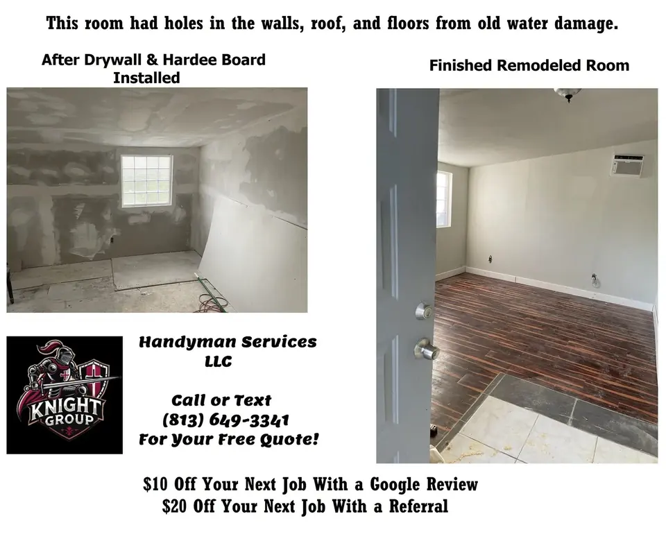
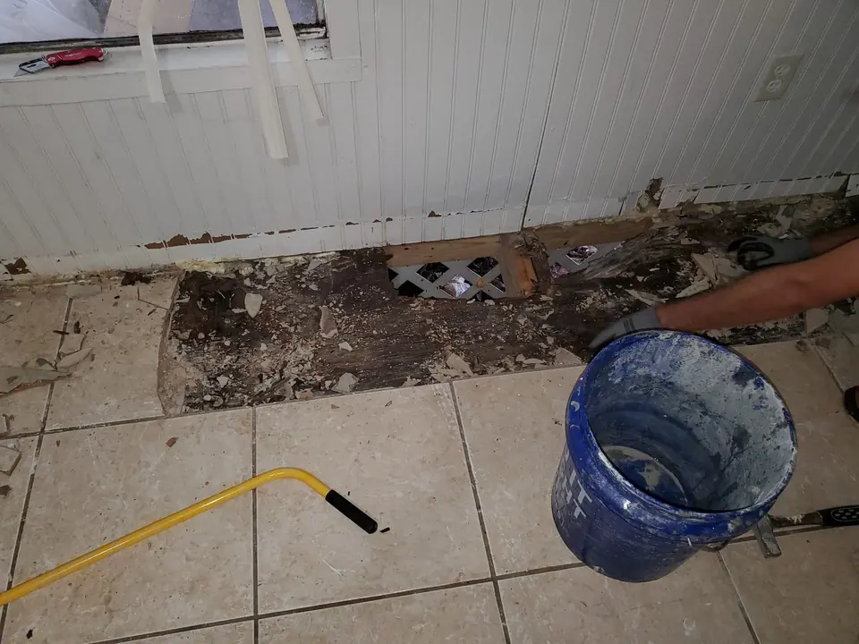
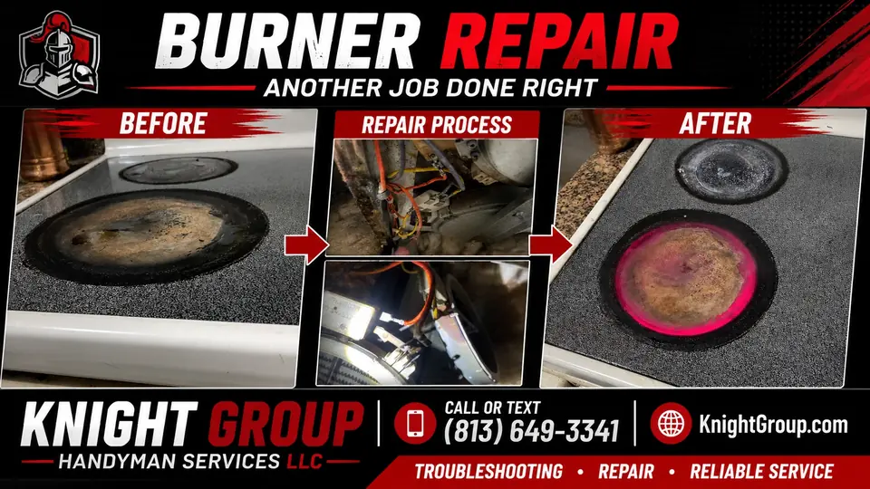

Screen door repair
Mesh replacement, frame straightening, hardware fixes, and closer adjustments for Florida screen doors.
Screen door repair
Mesh replacement, frame straightening, hardware fixes, and closer adjustments for Florida screen doors.
Screen door components we replace and tune

Florida insects arrive quickly when mesh tears — repairs should survive pets and gusts alike.
- Standard and heavy-duty mesh with fresh spline
- Self-closing hinge tension and pneumatic closer speeds
- Magnetic latch strips that fail to meet over time
- Aluminum frame corner gussets and spreader bars
- Bottom sweeps and bug seals at thresholds
- Rollers on sliding screen panels parallel to glass doors
- Pet door insert compatibility checks when mesh is torn low
- Color-matched spline and frame caps for curb appeal
Rental and seasonal readiness
Property managers often batch screen repairs before snowbird season. Provide unit numbers and photo sets for efficient routing across Clearwater, Largo, and Seminole communities.
Screen door repair built for Florida seasons

Screen doors take the brunt of pets, gusts, and daily traffic. Knight Group replaces mesh, straightens frames, swaps closers, and aligns latches on front, rear, and lanai screen units across Pinellas County.
Screen door fixes homeowners request most
- Pet-torn mesh and spline replacement on standard frames
- Hinge and closer adjustments that prevent slam-back tears
- Rollers and tracks on sliding screen panels
- Handle and latch kits when strikes no longer catch
- Minor frame rebuilds when corners have pulled apart
Security and airflow balance

A loose screen door invites insects and reduces curb appeal for rentals. We tension hardware correctly so doors close fully without ripping new mesh on the first week. Heavy-duty pet mesh is available when you describe the use case upfront.
Also see
Window screen repair, sliding door repair, and doors & windows for related openings work.
Screen doors on Gulf Coast entries

Salt air corrodes closer arms and hinge screws on waterfront-adjacent homes from Safety Harbor to the beaches. We specify stainless hardware when standard kits fail prematurely.
Pet-heavy households in Largo and Seminole benefit from heavier mesh quoted upfront — standard fiberglass fails quickly on ground-level doors.
Rescreen and hardware visits
Measure frame width and height or photograph the entire door with a tape reference. Mention pet traffic and preferred mesh weight so we quote the right material first trip.
Frequently asked questions
Common questions homeowners ask before booking this type of work in Pinellas County.
Can you rescreen a torn front door panel?
Yes — mesh, spline, and minor frame straightening are standard screen door repairs.
Do you install pet-resistant screen mesh?
Yes when requested — mention pets when booking so we quote appropriate mesh weight.
My closer slams the door and tears mesh — can you fix that?
Often yes — we adjust or replace closers and align hinges to reduce slam damage.
Do you repair sliding screen doors?
Yes — panels that share patio tracks are common alongside slider roller work.
How long does screen door repair take?
Many single-door rescreens finish within a short visit depending on frame condition and access.
Do you serve Seminole and Largo for screen doors?
Yes — screen door repair is offered across Pinellas County.

Ready to schedule?
Tell us what needs attention and where the property is located.